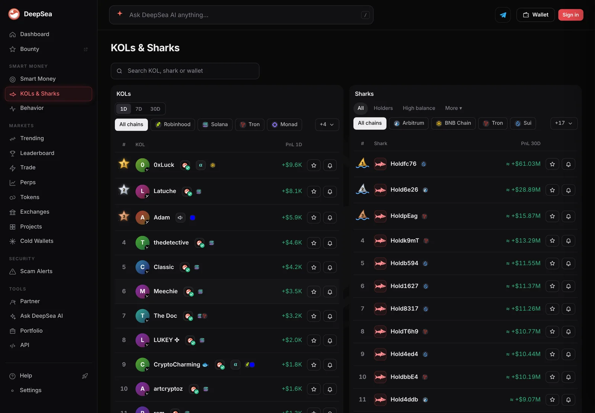

Sharks traded $23.5 million of Venice's VVV in a day, five times the day before, as it jumped 11%
Eight large wallets tracked by DeepSea bought $12.58 million of the AI token on Base and sold $10.9 million. One shark we checked on BaseScan added 110,143 VVV since Wednesday.
Key points
- Eight shark wallets bought $12,575,862 of VVV on Base and sold $10,900,225 in 326 trades, in DeepSea's 24-hour table built at 6:36 a.m. ET on November 26, 2026.
- A day earlier, six sharks bought $2.73 million and sold $1.66 million. Buying is up about 4.6 times.
- VVV was $27.66 on CoinGecko at 6:39 a.m. ET, up 11.3% in 24 hours, and on CoinGecko's trending list.
 What DeepSea's data shows
What DeepSea's data shows
In the 24-hour flow table DeepSea built at 6:36 a.m. ET on November 26, the VVV line on Base shows 8 shark wallets, $12,575,862 bought and $10,900,225 sold, in 326 trades. The token address matches the VVV contract on BaseScan.
In the most recent hour, three sharks bought $159,274 of VVV in five trades and none sold. The 24-hour table does not split the VVV total by wallet.

Data: DeepSea (desea.io), checked November 26, 2026, 6:36 a.m. ET.
Much more trading, a small net tilt
Venice sells private AI tools for chat, images and code, and VVV is its token. The token trades on Base, Coinbase's Ethereum layer 2 network.
Our November 25 story counted six sharks with $1.07 million of net VVV buying. By Thursday morning there were eight, and they moved $23.48 million in both directions, more than five times as much. The net tilt is still modest: about $1.68 million bought. For scale, CoinGecko counted $148.7 million of VVV traded in 24 hours, which puts the sharks' swaps at roughly 16% of that total. DeepSea counts on-chain swaps by tagged wallets, while CoinGecko counts mostly exchange trades.
The shark we checked again on BaseScan
In our November 25 story, we checked one VVV shark on BaseScan. At 6:42 a.m. ET on November 26 it held 545,178 VVV, worth about $15.09 million. On November 25 it held 435,036 VVV, so it added about 110,143 VVV, roughly $3 million at today's price.
DeepSea's wallet table shows this shark bought $3,373,291 and sold $702,504 across all tokens in 24 hours, in 125 trades. BaseScan shows no name tag, and we do not know who controls it or why it buys. BaseScan counted 160,451 VVV holders, up 347 in a day.

The price jumped with the market
VVV traded between $24.30 and $30.54 over 24 hours, CoinGecko shows. At 6:39 a.m. ET it was $27.66, up 11.3% in a day and 20.3% in seven days, for a market value of about $1.36 billion. It is still 19.9% below its record of $34.53 from September 21, 2026. Bitcoin rose 3.6% over the same day, to $60,590.
VVV shark trades in 24 hours, DeepSea
US$ million
Source: DeepSea 24-hour tables, built November 25, 2026, 6:35 a.m. ET and November 26, 2026, 6:36 a.m. ET.
LC Insight analysis
This section is our reading of the facts above, not a statement of fact.
- We think the jump in two-way trading is the bigger signal. Shark volume rose more than fivefold while the net tilt stayed under $2 million, which looks like active trading around a fast move.
- The one wallet we tracked kept adding. A balance that grew by 110,143 VVV in a day, now worth about $15 million, can move a market of this size on its own.
- VVV's daily gain was about three times bitcoin's. Tokens that run ahead of the market can also fall faster when it turns, so we read the shark data as interest, not a call on direction.
What's next
- Whether sharks are still net buyers of VVV when DeepSea's table next updates.
- The 545,178 VVV balance of the shark checked on BaseScan.
- Whether VVV holds above $24.30, its 24-hour low.
Disclaimer. This article is based on public information and the sources listed below as of the update time shown. It is for information only and is not investment, legal or tax advice. Figures may change as companies and authorities publish new data.
Sources
- DeepSea, 24-hour shark flow table (built November 26, 2026, 6:36 a.m. ET)
- BaseScan, Venice Token (VVV) token page (read November 26, 2026, 6:39 a.m. ET)
- BaseScan, VVV balance of the shark wallet (read November 26, 2026, 6:42 a.m. ET)
- CoinGecko, Venice Token (VVV) price, range and record (read November 26, 2026, 6:39 a.m. ET)
- CoinGecko API, trending coins (read November 26, 2026, 6:37 a.m. ET)
- Venice, official website